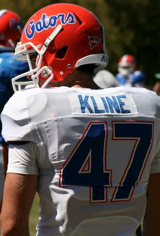

About Me
After graduating high school as a to sport athlete, baseball and football, at Stanton College Preparatory school I enlisted in the United States Air Force. In the Air Force I spent two year training with some of the most elite men in the country and qualified to become a pararescueman (PJ), the most highly trained rescue specialists in the world. I became a reservist in the summer of 2012 and enrolled in August at the University of Florida, majoring in Tele-communications and minoring in Sports Management; in the spring semester of 2013 I walked-on to the UF football team as a safety. In the summer of 2006 I joined the American Red Cross Volunteer Life-Saving Corps (ARCVLSC), and promoted through the ranks to hold the office of Lieutenant in 2013. I am a dedicated individual with a desire to better myself everyday. I learn quickly, seldom make the same mistake twice, and have a work ethic that is second to none. I look forward to potentially working with you someday.